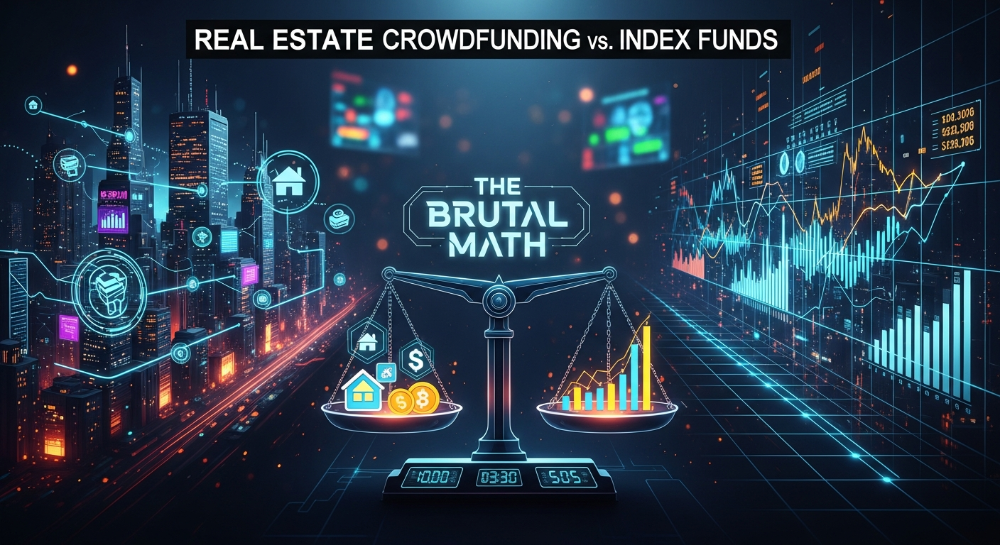

In the vast landscape of investment opportunities, two distinct titans frequently emerge in discussions among those seeking to grow their capital: the tangible, asset-backed world of real estate crowdfunding and the diversified, market-tracking efficiency of index funds. For the discerning investor, the choice isn't merely about preference; it's a deep dive into risk profiles, liquidity constraints, fee structures, and, most critically, the cold, hard "brutal math" of potential returns. We stand at a crossroads where the promise of direct property ownership, fractionalized and digitally accessible, confronts the proven, long-term stability and broad market exposure offered by passively managed portfolios. This article will meticulously dissect both investment avenues, peeling back the layers of marketing hype to reveal the underlying financial realities, empowering you to make a truly informed decision tailored to your unique financial objectives.
Real estate crowdfunding has emerged as a compelling alternative for investors seeking direct exposure to property markets without the traditional burdens of ownership, such as property management, large capital outlays, or the intricacies of direct transactions. This innovative approach leverages technology to pool capital from multiple investors, enabling them to collectively invest in commercial, residential, or development projects that would typically be inaccessible to individual investors. The allure is multifaceted: the tangibility of a physical asset, the potential for attractive yields (both income and appreciation), and the diversification away from traditional stock market volatility. However, beneath this appealing surface lies a complex financial structure with its own set of risks and rewards that demand careful scrutiny.
There are generally two primary models within real estate crowdfunding: equity crowdfunding and debt crowdfunding. Equity crowdfunding involves investors purchasing a share of ownership in a specific property or portfolio of properties. As equity holders, investors participate in the property's appreciation and any rental income generated, but they also bear the direct risks associated with property ownership, including market downturns, vacancy rates, and operational challenges. Returns in equity deals can be substantial if the property performs well, often quoted in the mid-to-high teens or even higher, but these are projected returns and are subject to significant variability. Debt crowdfunding, on the other hand, involves investors acting as lenders, providing capital to real estate developers or owners in exchange for fixed interest payments. These investments are often secured by the underlying property, offering a potentially lower-risk profile compared to equity deals, with more predictable income streams. Interest rates for debt deals typically range from 6% to 12% annually, depending on the loan-to-value ratio, the project's risk, and the sponsor's track record.
The "brutal math" of real estate crowdfunding often begins with examining the projected internal rate of return (IRR) or cash-on-cash return. While these metrics can look incredibly attractive on paper, it's crucial to understand the assumptions underpinning them. For instance, IRR projections often factor in optimistic appreciation rates and swift exits, which may not materialize in a fluctuating market. Cash-on-cash returns, while more immediate, do not account for the illiquidity of the investment. Most crowdfunding investments are long-term commitments, often locking up capital for 3 to 7 years, sometimes even longer. Exiting early can be difficult, if not impossible, and may involve significant penalties or discounts. This illiquidity is a major factor that differentiates it from highly liquid index funds and must be weighted heavily in any personal financial calculation.
Furthermore, fees play a significant role in eroding potential returns. Crowdfunding platforms typically charge various fees, including origination fees, asset management fees, disposition fees, and sometimes performance fees (carried interest) for equity deals. These fees can collectively reduce an investor's net return by several percentage points over the life of the investment. For example, a 1-2% annual asset management fee on a large project can translate into hundreds of thousands or even millions of dollars over several years, directly impacting the investor's bottom line. Diligent investors must meticulously review the offering documents to understand the full spectrum of fees before committing capital. The complexity of these structures, combined with the inherent risks of real estate markets, necessitates a high degree of due diligence and a robust understanding of the specific project and sponsor involved. Unlike the passive nature of index fund investing, real estate crowdfunding demands a more active, analytical approach to uncover its true financial implications.
Index funds represent a cornerstone of modern investment philosophy, celebrated for their simplicity, cost-efficiency, and the powerful principle of diversification. At their core, an index fund is a type of mutual fund or exchange-traded fund (ETF) with a portfolio constructed to match or track the components of a financial market index, such as the S&P 500, the Nasdaq 100, or a total bond market index. Instead of actively picking individual stocks or bonds, an index fund holds a basket of securities that mirrors the index it tracks. This passive investment strategy is built on the premise that, over the long term, the market itself tends to outperform the majority of actively managed funds, largely due to lower costs and broad market exposure. The brilliance of index funds lies in their ability to provide investors with immediate, broad diversification across numerous companies, sectors, or asset classes with a single investment.
The "brutal math" of index funds is often characterized by consistent, market-driven returns, low expense ratios, and the compounding effect over extended periods. For instance, a broad market index fund tracking the S&P 500 has historically delivered average annual returns of approximately 10-12% over many decades, before inflation. While these returns are not guaranteed and market fluctuations are inevitable, the diversified nature of these funds means that the underperformance of one company or sector is often offset by the stronger performance of others within the same index. This inherent diversification significantly mitigates idiosyncratic risk – the risk associated with individual company performance – a risk that is much more pronounced in single-asset real estate crowdfunding deals. An investor in an S&P 500 index fund, for example, is effectively investing in 500 of the largest U.S. companies, spreading their risk across a vast economic landscape rather than concentrating it in a handful of properties.
One of the most compelling advantages of index funds is their remarkably low cost structure. Because they do not require active management, extensive research, or frequent trading by portfolio managers, index funds typically have significantly lower expense ratios compared to actively managed mutual funds or the cumulative fees associated with real estate crowdfunding. Many popular index ETFs and mutual funds boast expense ratios well under 0.10% annually, meaning for every $10,000 invested, an investor might pay less than $10 in annual fees. This seemingly small difference can have a monumental impact on long-term returns due to the power of compounding. Over decades, even a 1% difference in annual fees can translate into hundreds of thousands of dollars in lost returns, a critical factor often overlooked by those seduced by the promise of higher gross returns from more complex, higher-fee investments. The transparency and simplicity of index fund fees make them a clear winner for cost-conscious investors.
Furthermore, index funds offer unparalleled liquidity. Investors can buy or sell shares of an index ETF throughout the trading day at market prices, just like individual stocks. This ease of entry and exit provides immense flexibility, allowing investors to adjust their portfolios quickly in response to changing financial needs or market conditions. This stands in stark contrast to real estate crowdfunding, where capital can be locked up for years with limited or no secondary market for early exits. The accessibility of index funds is also a major benefit; they can be purchased through virtually any brokerage account, often with very low or no minimum investment requirements, making them ideal for investors at all stages of their financial journey. Ultimately, index funds offer a powerful, low-cost, and liquid pathway to wealth accumulation, driven by the enduring growth of the broader market, making them a formidable contender in any investment comparison.
When pitting real estate crowdfunding against index funds, the "brutal math" isn't just about comparing headline return numbers; it's a comprehensive analysis of risk-adjusted returns, volatility, and the true cost of achieving those returns. Investors must move beyond simplistic comparisons and delve into the statistical nuances that define the long-term performance and stability of each asset class. While real estate crowdfunding often touts higher projected IRRs, sometimes reaching 15-20% or more for equity deals, these figures come with significant caveats. These projections are often based on best-case scenarios, including successful property development, optimal market conditions for sale, and efficient management, none of which are guaranteed. Actual realized returns can vary wildly, and underperforming projects can result in capital loss or significantly lower returns than initially advertised. The illiquidity of these investments means that capital is locked up, preventing investors from reallocating funds to better-performing assets if the initial project sours, further exacerbating potential losses or opportunity costs.
In contrast, the "brutal math" of index funds, particularly those tracking broad market indices like the S&P 500, reveals a different kind of performance. Over extended periods (e.g., 30+ years), the S&P 500 has historically delivered average annual returns in the range of 10-12%, including dividends. While these might appear lower than the peak projections of some crowdfunding deals, they represent a highly diversified, readily liquid, and consistently achieved return profile, net of minuscule fees. The power of compounding at these rates, sustained over decades, leads to substantial wealth accumulation. Moreover, the volatility of index funds, while present during market downturns, is typically temporary, with markets historically recovering and reaching new highs over time. This long-term upward trend, driven by global economic growth and corporate innovation, provides a robust foundation for passive wealth generation that is less susceptible to the specific risks of a single property or sponsor.
Secure your digital wealth with the world's most trusted hardware wallets.
GET YOUR WALLET NOWA crucial aspect of this head-to-head comparison is the concept of risk-adjusted returns. While a real estate crowdfunding deal might promise a 15% IRR, what is the level of risk undertaken to achieve that? This involves evaluating sponsor risk, market risk specific to the property's location, construction risk (for development deals), and the inherent illiquidity. These risks are substantial and, if realized, can significantly diminish or erase expected returns. Index funds, by design, mitigate many of these specific risks through diversification. An S&P 500 index fund, for example, spreads risk across 500 companies in various sectors, making it highly unlikely that a single company's failure or even a sector-specific downturn will devastate the entire portfolio. While market-wide systemic risks (e.g., recessions) affect index funds, their broad base and historical resilience often lead to recovery and continued growth, typically outpacing single, highly concentrated assets in the long run when accounting for risk.
Furthermore, the true cost of investment significantly impacts the net "brutal math." As discussed, real estate crowdfunding often involves multiple layers of fees (management, acquisition, disposition, performance fees) that can cumulatively eat into gross returns. These fees are often opaque and require careful calculation to understand their full impact. Index funds, conversely, are renowned for their ultra-low expense ratios, often below 0.10%. This difference might seem minor on an annual basis, but over a 20-30 year investment horizon, the cumulative effect of higher fees can reduce an investor's total wealth by tens or even hundreds of thousands of dollars. Therefore, while a real estate crowdfunding deal might project a higher gross return, the net return after all fees and factoring in illiquidity and specific project risks might make the index fund's lower, but more consistent, liquid, and low-cost return a superior option for the average investor seeking efficient capital growth. The math, when stripped bare, often favors the broad market exposure and cost efficiency of index funds for most long-term wealth building goals.
Beyond the headline returns and risk profiles, the practical considerations of liquidity, fee structures, and accessibility represent critical components of the "brutal math" that often dictate the suitability of an investment for an individual's financial situation. These factors, while sometimes overlooked in the excitement of potential gains, can profoundly impact an investor's flexibility, net returns, and overall investment experience. Understanding these hidden costs and benefits is paramount for making a truly informed decision between real estate crowdfunding and index funds.
Liquidity: This is arguably one of the most significant differentiators. Real estate crowdfunding investments are inherently illiquid. When you invest in a specific property or project through a crowdfunding platform, your capital is typically locked in for the entire duration of the project, which can range from a few years for debt deals to 5-10 years or more for equity investments. There is rarely a robust secondary market to sell your shares early, and if one exists, it often comes with significant discounts or limited buyers. This means that if you need access to your capital for an emergency, a change in financial goals, or to seize another investment opportunity, you might be unable to retrieve it without substantial penalty or loss. This illiquidity demands that investors only commit capital they are absolutely certain they will not need for the foreseeable future. In contrast, index funds, particularly those structured as Exchange Traded Funds (ETFs), offer unparalleled liquidity. Shares can be bought and sold throughout the trading day on major stock exchanges, just like individual stocks. This means investors can access their capital quickly and efficiently, providing immense flexibility and peace of mind. This difference in liquidity alone can be a deal-breaker for many investors, especially those who prioritize financial agility.
Fees: The impact of fees on long-term returns cannot be overstated. Real estate crowdfunding platforms and sponsors typically charge a multitude of fees that can significantly erode an investor's net returns. These often include:
Accessibility: Both investment types have democratized access to their respective markets, but in different ways. Real estate crowdfunding has opened up private real estate investments to accredited and, in some cases, non-accredited investors, who previously needed vast sums of capital or specialized networks. Minimum investments can range from $500 to $25,000 or more, making specific projects accessible to a broader audience. However, the regulatory landscape for crowdfunding is still evolving, and the level of due diligence required from investors is significant. Index funds are arguably even more accessible. They can be purchased through virtually any online brokerage account with no minimums for ETFs (you can buy a single share) and often low minimums for mutual fund versions. This universal accessibility, combined with their simplicity and low cost, makes index funds an ideal entry point for new investors and a staple for seasoned ones seeking broad market exposure. The ease of setup, minimal ongoing management, and widespread availability of index funds make them the undisputed winner in terms of overall accessibility and ease of use for the average investor.
Understanding the inherent risk profiles and the associated due diligence required is a critical, often understated, aspect of the "brutal math" when comparing real estate crowdfunding and index funds. Investors must not only assess potential returns but also the probability and magnitude of potential losses, and the effort required to mitigate those risks. The nature of risk in each investment vehicle is fundamentally different, demanding distinct approaches to evaluation and ongoing management.
Real Estate Crowdfunding Risk Profile:
Due Diligence for Real Estate Crowdfunding: Navigating these risks requires extensive due diligence. Investors must meticulously scrutinize:
Index Funds Risk Profile:
Due Diligence for Index Funds: The due diligence for index funds is considerably simpler due to their transparent nature and diversification:
The "brutal math" of risk and due diligence clearly illustrates that real estate crowdfunding demands a far greater commitment of time and expertise from the investor to properly assess and mitigate risks. The concentration of risk in specific projects and sponsors means the potential for capital loss is higher and less diversified. Index funds, while not immune to market downturns, offer a highly diversified, transparent, and passively managed approach that significantly reduces specific project risk and simplifies the due diligence process, making them a more robust and less... and implement these strategies to ensure long-term success.
In summary, staying ahead of these trends is the key to business longevity and security. By following this guide, you maximize your growth and ensure a stable digital future.
Don't wait for the headlines. Our Private Telegram Channel delivers real-time AI security updates and digital wealth strategies before they go viral. Stay protected. Stay ahead.
⚡ JOIN THE 1% NOW